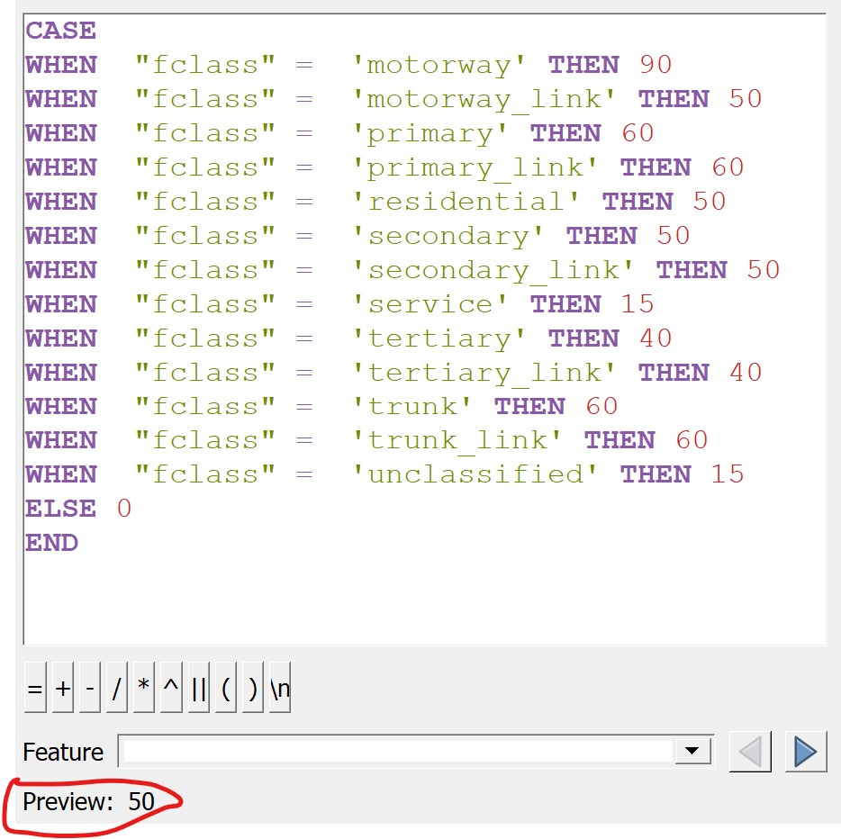

12 Delineating Service Area Using Network Distance Approach
12.1 Setting the scene
12.1.1 The Task
In this hands-on exercise, you are tasked to derive service areas of fire stations of Singapore.
12.1.2 The Data
For the purpose of this exercise, twodata sets will be used. They are:
- Fire stations from Singapore Civil Defence Force, Ministry of Home Affairs. This data can be downloaded from data.gov.sg.
- Roads data from OpenStreetMap (OSM) data sets. OSM data sets can be downloaded from Geofabrik’s free download server.
Note: I recommend this download site instead of bbbike because I found out that the quality of the data provided by Geofabrik is better than bbbike.
12.2 Installing QNEAT3 plugin.
Before getting started, you need to install QNEAT3 plugin.
- From the menu bar, select Plugins -> Manage and Install plugins.
Plugins dialog window appears.
- At the query, type QNEAT3.
Notice that QNEAT3 appears on the search output list.
Click on QNEAT3.
Click on Install Plugin button.
When the installation is completed, close the dialog box by
- click on Close button.
In order to activate the Iso-Area as Polygon/Contour algorithms you have to add the matplotlib library to your QGIS-Python installation. Depending on your operating system you may install matplotlib manually using the following options:
12.2.1 Windows:
Open the OSGeo4W shell that has been installed alongside QGIS.
Click Start then type OSGeo4W Shell, and hit Enter key.
At the OSGeo4W Shell, type the command below.
python-qgis -m pip install matplotlib
- Press Enter key.
- When the installation is completed, restart QGIS3
12.2.2 macOS
Open a terminal.
Type the following command:
/Library/Frameworks/Python.framework/Versions/3.x/bin/pip3.x install matplotlib
Note: Replace the version number x according to your installation) into the terminal,
Press Enter and confirm installation with yes when prompted
Restart QGIS3
After this installation, you are ready to use all QNEAT3 Algorithms.
Before using the plugin, you must at least read the concept and methods of Iso-area because it will be used in this hands-on exercise.
12.3 Start a new QGIS Project
DIY: Using the steps you had learned in previous hands-on exercise, start a new QGIS project. Save the project and give it a name (i.e. Hands-on_Ex11).
Reminder: Ensure that svy21 projection system is used.
12.4 Data Preparation
12.4.1 Downloading the fire stations layer
DIY: Using the steps you had learned, perform the following steps:
Download fire stations data from data.gov.sg and import it into QGIS.
In data.gov.sg portal, fire station data set is in kml and geojson formats. Import the most usable format into QGIS as a GIS layer.
Save the GIS layer into GeoPackage format. Name the output layer as
firestations.
Be warn: The original data is in wgs84. For the purpose of network analysis, the GIS data must be be in projected coordinates system (i.e. SVY21 for Singapore).
12.4.2 Extracting and preparing road network layer
I can’t emphasize enough the importance of a quality data preparation in GIS analysis. In this sub-section, you will use basic QGIS functions to perform the following data preparation tasks:
selecting all roads features with the study area
extracting appropriate road classes for the analysis, and
updating speed values of the road feature classes.
Table 1 below shows
| Road feature class | Speed (km/h) |
|---|---|
| motorway | 90 |
| motorway_link | 50 |
| primary | 60 |
| primary_link | 60 |
| residential | 50 |
| secondary | 50 |
| secondary_link | 50 |
| service | 15 |
| tertiary | 40 |
| tertiary_link | 40 |
| trunk | 60 |
| trunk_link | 60 |
| unclassified | 15 |
12.4.2.1 Selecting all road network with the study area
DIY: Performing the following task by using appropriate QGIS function(s) you had learned from previous hands-on exercises.:
import road data set of OSM into QGIS,
extract the road network within Singapore mainland (excluding outer insland, Pulau Tekong and Pulau Ubi), and
save the GIS layer into GeoPackage format. Call the layer
all_roads.
Be warn: The original data is in wgs84. For the purpose of network analysis, the road data must bein projected coordinates system (i.e. svy21 in Singapore).
12.4.2.2 Extracting motor vehicle road network
DIY: Using appropriate QGIS function(s) you had learned from previous hands-on exercise, select road feature classes listed in Table 1 above from the
all_roadslayer. Save the GIS layer into GeoPackage format. Name the layerroads.
Reminder: Remove all the source data from QGIS project before continue to the next section.
12.4.2.3 Updating speed values of the road feature classes
In order to derive drive-time service areas from a road network, the road data must have a field containing the speed of each network feature class. The steps below will be used to update the speed field of road layer.
From Layers panel, right-click on Roads.
Select Open Attribute Table from the context menu.
The attribute table of Roads layer appears.
- From the menu bar of the attribute table, click on Open field calculator icon
 .
.
The Field calculator dialog window appears.
Since we are going to create a new field called speed,
- Click on the check-box in front of Create a new field.
- For Output field name, type
speed. - For Output field type, select Integer (32bit) from the drop-down list.
- At the Expression panel, type as shown below.

Best practice: check the Preview below the Expression panel to ensure that the syntax are valid.
- Click on OK button to run the operation.
Upon completion, the Field calculator dialog window will close by itself.
Notice that a new attribute field called speed has been added into the attribute table of Roads layer.
Lastly, remember to save the changes before ending the process.
- From the icon menu of the attribute table of Roads, click on Toggle editing mode icon .
The Stop Editing dialog window appears.

Click on Save button to save the changes.
Close the attribute table of Roads layer.
12.5 Delineating Network Service Areas with NEAT3 Plugin
In this section, you will learn how to delineating network service areas by using QGIS Network Analysis Toolbox (QNEAT3) plugin.
12.5.1 Buffering method
Buffering is one of the most commonly used GIS method to delineating service area. It is based on the concept of Euclidean distance (as-the-crow-flies). In general, this is done by creating a buffer zone with a certain radius (i.e. 5 kilometeres) around a target location.
For the purpose of this hands-on exercise, Bukit Batok Fire Station will be used as the target location.
DIY: Using the steps you had learned, select Bukit Batok Fire Station.
Your screen shout look similar to the screenshot below.
Notice that the selected target fire station is highlighted in yellow.
Next, we will delineate the 5-km service area of Bukit Batok Fire Station by using buffering method of QGIS.
- From QGIS’s menu bar, select Vector -> Geoprocessing Tools -> Buffer.
The Buffer dialog windows appears.
For Input layer, select firestations from the drop-down list.
For Distance, type 5000. Make sure that the unit of measurement is in meters.
For Segments, type 100 for smoother buffer zone.
The completed Buffer dialog window should look similar to the screenshot below.
When you are ready,
- Click on Run button.
In the blink of an eye, a temporary layer called Buffered is added into Layers panel and display on QGIS view window as shown below.

Despite its popularity, using straight-line distances to delineate a service area can be rather misleading is real world geography. This is because the commonly used fire engines need to travel along a road in order to reach the fire incident location rather than flying like a crow where by the speed is almost constant.
12.5.2 Shortest network distance method
A more realistic approach to delineating service area is by using network distance. By and large, there are two approaches, namely shortest network distance and fastest network distance. In this sub-section, shortest network distance approach will be used. You will learn how to delineate service area using fastest distance approach in the next sub-section.
To delineate service area using shortest distance approach, Iso-Area as Polygons (from Layer) function of QNEAT3 will be used.
- From QGIS’s menu bar, select Processing -> Toolbox.
The Processing Toolbox panel appears.
- Select QNEATS3 -> Iso-Areas -> Iso-Area as Polygons (from Layer).
The Iso-Area as Polygons (From Layer) dialog window appears.
For Vector layer representing network, select Roads from the drop-down list.
For Start Points, select firestations from the drop-down list.
Notice that both GIS layers are in projected coordinates system (i.e. EPSG:3414 which is svy21).
Keep the check-box in front of Selected features only checked.
For Unique Point ID field, select Name from the drop-down list.
For Size of Iso-Area (distance or time value), type 5000.
For Contour Interval, type 5000.
For Path type to calculate, select Shortest Path (distance optimization) from the drop-down list.
For Direction field, select oneway from the drop-down list.
For Value for forward direction, type F.
For Value for backward direction, type T.
For Value for both directions, type B.
Keep the rest of the entries as default.
Your screen should look similar to the screenshot below.
When you are ready to run the function,
- click on the Run button.
The process involves massive computation and will take awhile to complete (usually less than 5 mins in a standard 64bit machine).
When the process completed, two temporary layers namely: Output Polygon and Output Interpolation will be added onto Layers panel and display on QGIS View window.
The Output Interpolation layer is a raster layer created using triangular irregular network (TIN). On the other hand, Output Polygon layer is a polygon feature showing the 5-km service area of Bukit Batok Fire Station by road network.
The Output Polygon is popularly know as isochrone. It is originated from Greek: iso means “the same” and chronos means “time”.
12.5.3 Fastest distance method
Instead of using distance to compute the shortest path, the fasted distance approach uses the speed to delineate the service area of a target location, in our case, Bukit Batok Fire Station. In this sub-section, you are going learn how to delineate a 5-min service area by using QNEAT3.
- From QGIS’s menu bar, select Processing -> Toolbox.
The Processing Toolbox panel appears.
- Select QNEATS3 -> Iso-Areas -> Iso-Area as Polygons (from Layer).
The Iso-Area as Polygons (From Layer) dialog window appears.
For Vector layer representing network, select Roads from the drop-down list.
For Start Points, select firestations from the drop-down list.
Keep the check-box in front of Selected features only checked.
For Unique Point ID field, select Name from the drop-down list.
For Size of Iso-Area (distance or time value), type 300.
For Contour Interval, type 300.
For Path type to calculate, select Fastest Path (time optimization) from the drop-down list.
For Direction field, select oneway from the drop-down list.
For Value for forward direction, type F.
For Value for backward direction, type T.
For Value for both directions, type B.
For Speed field, select speed from the drop-down list.
Keep the rest of the entries as default.
Your screen should look similar to the screenshot below.
When you are ready to run the operation,
- click on Run button.
Again, the process will take some time to complete. Usually not going to take more than 5 minutes for a standard 64bit machine.
When the operation completed, two new temporary layers will be added onto Layer panel and display on QGIS View window. Similar to Shortest network distance methods, one of the output is called Output Polygon which shows the 5-minutes drive-time service area of Bukit Batok Fire Station as shown in figure below.

12.6 Comparing Buffer, Shortest and Fastest Service Area
Figure below comparing the buffer service area and shortest distance service area.
Figure below compares the difference between buffer, shortest distance and fastest distance of Bukit Batok Fire Station.